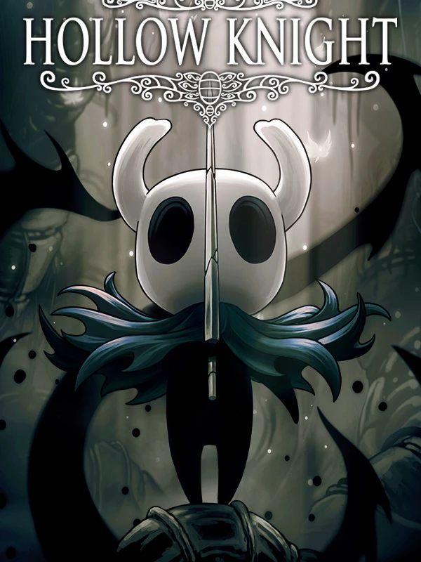
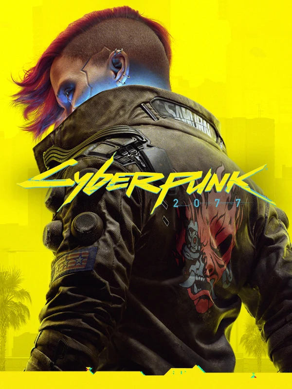

CONHEÇA O CÓDIGO
Esse é o
meu BackLog.
Um projeto do meu portfólio que continuo revisando e melhorando.





REPOSITÓRIO DO PROJETO
gabriellcs7 / BackLog
github.com/gabriellcs7/BackLog
Qual função você mais curtiu?
Me conta nos comentários.